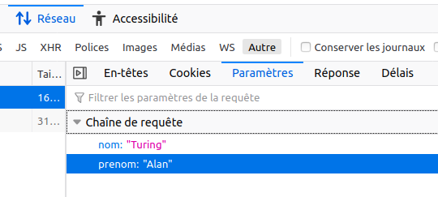
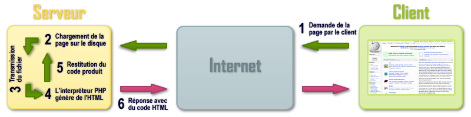

Ce cours est largement inspiré du chapitre 28 du manuel NSI de la collection Tortue chez Ellipsen auteurs : Ballabonski, Conchon, Filliatre, N’Guyen.
Le Web
Les trois piliers du Web : HTTP, URL et HTML
Le Web est une application du réseau Internet qui désigne un réseau de sources d’information reliées par des liens hypertextes. Le Web fonctionne selon l’architecture client/serveur : la machine client demande à la machine serveur une ressource identifiée par son adresse URL. Aux débuts du Web le client était commandé par un humain mais ce peut être un programme.
Dans un échange sur le Web, le client envoie une demande ou requête à l’aide d’un logiciel appelé navigateur1 : le serveur est un logiciel installé sur une machine reliée en réseau à la machine du client.
Le protocole HTTP, acronyme d’Hypertext Transfer Protocol, est un protocole de la couche application qui décrit le format des échanges de données entre un client et un serveur sur le Web. Un échange HTTP s’établit selon le schéma suivant :
Le client saisit une URL dans la barre d’adresse du navigateur, elle est résolue en adresse IP par le service DNS.
Mise en place d’une connexion TCP entre le client et le serveur.
Le client envoie une requête HTTP (format texte lisible par un humain).
Le serveur retourne une réponse HTTP, lue par le client. S’il y a un contenu, il est affiché par le navigateur du client.
Fermeture ou réutilisation (paramètre Keep-alive) de la connexion pour les requêtes suivantes.
Le protocole HTTP n’est pas sécurisé par défaut, il peut l’être par l’ajout du protocole SSL ou TLS et on désigne par HTTPS sa version sécurisée. HTTP est un standard normalisé par l’IETF comme les protocoles d’internet TCP et IP.
le nom de domaine sur Internet du serveur Web est gnu.org. www.gnu.org est un sous-domaine servant d’alias pour le dossier public du serveur ;
gnu/linux-and-gnu.fr.html est le chemin vers la ressource sur le serveur : le fichier linux-and-gnu.fr.html qui se trouve dans le dossier public gnu.
HTML pour Hypertext Markup Language est le langage de description des documents textes disponibles sur le Web qui sont reliées entre eux par des liens hypertextes. Il s’agit d’un langage à balises. En pratique, d’autres types de ressources sont accessibles sur le Web par une URL : des images, des fichiers de données (aux formats CSV, JSON …), des videos … Par ailleurs les pages sont désormais réalisées en combinant HTML avec CSS pour la mise en forme, le positionnement, certains effets visuels et Javascript pour la programmation événementielle nécessaire à l’interactivité côté client.
Avec un navigateur Web, demander la page d’adresse http://frederic-junier.org/NSI/sandbox/index.html.
Ouvrir la barre d’outils de développement en appuyant sur la touche de fonction F12 et sélectionner l’onglet Réseau. On peut voir les entêtes de la requête et de la réponse HTTP.
Que représente le code d’état de la réponse HTTP ?
Quelles informations sur le client sont transmises au serveur dans l’entête de la requête ?
Quelles informations sur le serveur sont transmises au client dans l’entête de la réponse ?
Effectuer une nouvelle requête avec l’URLhttps://frederic-junier.org/NSI/sandbox/. Quelle différence avec la requête initiale peut-on observer dans la barre d’adresse du navigateur ?
Le site https://httpie.org/ propose un client HTTP en ligne de commandes permettant de décomposer les requêtes HTTP en précisant la méthode et l’URL de la ressource demandée.
Saisir la commande http -v GET https://frederic-junier.org/NSI/sandbox/index.html. Décrire le fonctionnement de la méthode GET du protocole HTTP : formats de la requête et de la réponse.
Saisir la commande http -v HEAD https://frederic-junier.org/NSI/sandbox/index.html. Décrire le fonctionnement de la méthode HEAD du protocole HTTP : formats de la requête et de la réponse.
Saisir la commande http -v PUT https://frederic-junier.org/NSI/sandbox/index.html hello=world. Quel résultat obtient-on ? Explication 2 ?
Quel est l’affichage obtenu ? Ouvrir les outils de développement avec F12 puis sélectionner les onglets Réseau et Paramètres.
La partie ?nom=Turing&prenom=Alan de l’URL est une chaîne de requête, elle commence par le symbole ? puis contient une liste de paires nom=valeur séparées par un symbole esperluette &. Ces paramètres ne font pas partie de l’adresse de la ressource mais sont une façon pour le client de transmettre des informations au serveur.

Remplacer Turing par votre nom et Alan par votre prénom dans l’URL précédente. Que peut-on remarquer ? À votre avis, que se passe-t-il sur le serveur lorsqu’il reçoit la requête HTTP ?
Voici le contenu du fichier accueil.php sur le serveur. S’agit-il d’un texte écrit en HTML ? Faire une recherche sur la signification de l’acronyme PHP.
Enregistrer l’URL testée précédemment dans les marque-pages du navigateur. Ouvrir un autre onglet et cliquer sur le signet enregistré. Retrouve-t-on la même page Web ?
Cliquer sur le bouton Envoyer. Que se passe-t-il ?
Changer les valeurs des champs Prénom et Nom du formulaire puis cliquer sur le bouton Envoyer. Que se passe-t-il ? Observe-t-on un changement dans l’URL de la requête ? dans son entête ?
Rafraîchir la page avec F5. Que se passe-t-il ?
Ouvrir la fenêtre des outils de développement et afficher dans l’onglet Réseau l’entête de la requête HTTP qui devrait ressembler à celui-ci :
Sélectionner l’onglet Paramètres et vérifier qu’on retrouve les paramètres transmis dans l’URL. Quelle différence par rapport à la méthode vue en question 1 ?
Afficher le code source de la page formulaire-post.html avec le raccourci clavier CRTL + U. Quels sont les deux changements par rapport au code de formulaire-get.html ?
Méthodes de passage des paramètres : GET ou POST
En HTML, un formulaire est un élément qui permet de transmettre des informations à un serveur Web. Il est composé d’un élément <form action="http://domaine/cible" method="GET" > qui contient un ou plusieurs widgets, des éléments HTML permettant de saisir les entrées du client et au moins un élément <button type="submit>Bouton d'envoi</button>. Un clic sur ce dernier déclenche l’exécution d’une requête HTTP qui va transmettre les données saisies selon les valeurs des attributs action et method de l’élément <form> :
action a pour valeur l’URL du fichier auquel sera envoyé le formulaire. Ce fichier est un programme écrit dans un langage de script comme PHP ou Python, qui va prendre en entrée les paramètres du formulaire transmis par le client, les traiter et générer la page Web en HTML qui lui sera renvoyée.
method peut prendre deux valeurs GET ou POST (en minuscule ou majuscule), ce sont les deux modes de transmission des paramètres du formulaire qui sont deux méthodes distinctes du protocole HTTP :
avec la méthode GET , les données du formulaire sont assemblées dans une chaîne de paires nom=valeur séparées par le symbole & qui est ajouté à la fin de l’URL après le délimiteur ?.
avec la méthode POST les données du formulaire sont transmises toujours dans le corps de la requête. Les données n’apparaissent donc pas dans l’URL.

Le formulaire du fichier formulaire-get.html de l’exemple 1 contient deux widgets <input>. Chacun va fournir un couple nom=valeur, le nom est désigné par l’attribut name et la valeur par le texte saisi dans l’élément <input>. Chacun est associé par son attribut id à une étiquette contenue dans un élément <label>.
Toutes les informations transmises, le sont en clair dans l’URL. Celle-ci est limitée en taille donc la méthode GET ne peut pas être utilisée pour transmettre des informations trop longues.
Une requête GET est constituée uniquement d’un entête, elle n’a pas de corps.
Elle ne modifie pas l’état du serveur, elle est utilisée uniquement pour demander une ressource. Un exemple classique d’utilisation est la formulation d’une requête à l’aide du formulaire d’un moteur de recherche. L’URL générée peut être utilisée plusieurs fois et conservée comme marque-page.
Les données sont transmises dans le corps de la requête, il n’y a pas de restriction de taille. Elles peuvent être de tout type : url-encodées (chaîne de paires nom=valeur), ou binaires. C’est précisé dans le champ Content-type de l’entête comme pour une réponse HTTP.
Les données n’apparaissent pas dans l’URL, néanmoins, si le protocole HTTP est employé sans chiffrement, il suffit d’intercepter la requête pour accéder aux données en clair.
Les données envoyées peuvent modifier l’état du serveur. Les requêtes POST sont utilisées pour les modifications de bases de données sur le serveur (achats, réservation, transfert de fichiers …). Par conséquent si on veut renvoyer les données du formulaire un message en popup avertit que ce nouvel envoi aura pour effet de bord modifier l’état du serveur et par exemple d’enregistrer un nouvel achat s’il s’agit d’un formulaire de commande.
QCM de type E3C2.
Parmi les réponses suivantes, que permet d’effectuer la méthode POST du protocole HTTP ?
Réponse A : Définir le style d’une page web
Réponse B : Pirater des données bancaire
Réponse C : Envoyer une page web vers le client
Réponse D : Envoyer les données saisies dans un formulaire HTML vers un serveur
Un site internet utilise une requête HTTP avec la méthode POST pour transmettre les données d’un formulaire. Laquelle des affirmations suivantes est incorrecte ?
Réponse A : les données envoyées ne sont pas visibles
Réponse B : il est possible de transmettre des données de type binaire
Réponse C : les données transmises sont cryptées
Réponse D : il n’y a pas de restriction de longueur pour les données transmises
Un internaute clique sur un lien qui envoie la requête HTTP suivante à un serveur :
Réponse A : de renvoyer le fichier traitement.php en identifiant nom et prénom à Snow et Jon
Réponse B : d’exécuter le fichier traitement.php en identifiant nom et prénom à Snow et Jon
Réponse C : d’indiquer si Jon Snow a bien pris son traitement
Réponse D : de renvoyer le fichier traitement.php en affichant prénom et nom : Jon
Eléments de formulaire
Le principal élément permettant la saisie de données dans un champ de formulaire HTML est <input>. Son attribut type permet de vérifier que les données saisies correspondent au type attendu.
Cliquer sur RUN pour lancer le serveur, remplir le formulaire contenu dans le fichier index.php et envoyer les données. Quelle méthode est utilisée pour le passage des paramètres du formulaire ?
Modifier les codes sources des fichiers index.php et navigateur.php pour changer la méthode de passage des paramètres du formulaire. En PHP, on récupère la valeur du paramètre nom avec $_GET['nom'] si la méthode est GET ou $_POST['nom'] si c’est POST.
Consulter la documentation sur l’élément de formulaire <select> contenue dans la page https://www.w3schools.com/html/html_form_elements.asp et remplacer les <input> de type radio du formulaire dans index.php par un élément <select> avec choix unique.
Cliquer sur RUN pour lancer le serveur, remplir le formulaire contenu dans le fichier index.php et envoyer les données. Quelle méthode est utilisée pour le passage des paramètres du formulaire ?
Modifier les codes sources des fichiers index.php et langages.php pour changer la méthode de passage des paramètres du formulaire.
Consulter la documentation sur l’élément de formulaire <select> contenue dans la page https://www.w3schools.com/html/html_form_elements.asp et remplacer les <input> de type checkbox du formulaire dans index.php par un élément <select> avec choix multiple. Pour modifier le code PHP on s’inspirera de ce post stackoverflow.
La page présente un formulaire basique de connexion avec deux champs login et password. La valeur de l’identifiant est libre et le mot de passe est secret. Remplir le formulaire et envoyer les données. Quelle méthode de passage des paramètres est utilisée ? La transmission du mot de passe est-elle satisfaisante ?
Revenir sur la page du formulaire, ouvrir la fenêtre des outils de développement avec F12 et modifier le code source pour que l’envoi du mot de passe soit sécurisé.
Dans le schéma ci-dessous d’un échange Web sécurisé avec le protocole HTTPS, apparaît la notion de certificat. Quel est le rôle d’un certificat et comment est-il géré par le navigateur ?